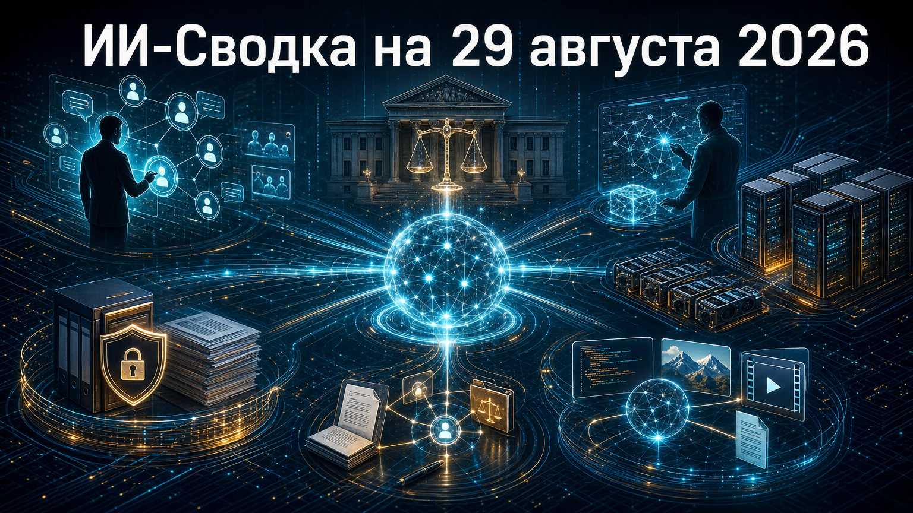

Новостей сегодня меньше, чем обычно
Повестка дня показывает, как конкуренция в ИИ смещается в корпоративные процессы, государственные закупки и инфраструктурное финансирование. Одновременно Anthropic демонстрирует, что вопросы контроля моделей становятся не только предметом политики, но и отдельным направлением автоматизированных исследований.
Китайский модельный сектор продолжает развивать открытые мультимодальные системы для программирования и агентных сценариев. В результате рынок всё заметнее конкурирует не только качеством базовых LLM, но и интеграциями, управлением доступом и доступностью вычислений.
Salesforce и Anthropic представили Claudeforce — расширение интеграции Claude с данными, правилами и рабочими процессами Salesforce. Как сообщает TechRadar, в рамках анонса появился плагин Salesforce in Claude с 37 готовыми навыками для задач продаж.
Claude также заявлена как модель рассуждений для компонентов Agentforce и должна стать моделью по умолчанию в Slack. Это усиливает дистрибуцию Anthropic в корпоративных процессах, где особенно важны доступ к CRM-данным, правила действий и контроль результата; при этом коммерческие условия, сроки и региональная доступность в материале не раскрыты.
Федеральный суд в Северной Калифорнии признал незаконным решение администрации США присвоить Anthropic статус риска цепочки поставок. По данным TechCrunch, судья Рита Лин сочла действия властей произвольными, нарушающими due process и представляющими собой недопустимую ответную меру за публичную позицию компании.
Спор возник после конфликта вокруг ограничений Anthropic на использование её моделей для автономного оружия и массовой внутренней слежки. Решение важно для всего рынка frontier-моделей: оно ограничивает возможность отстранять поставщика ИИ от федеральных контрактов лишь административным ярлыком, хотя дальнейшие процессуальные шаги властей и окончательные последствия для закупок ещё могут измениться.
Anthropic представила Automated Alignment Researcher — агентную исследовательскую систему, которая ищет литературу, предлагает методы post-training, обучает модели и проверяет результаты. Как пишет TechCrunch, компания также открыла harness, использованный для таких циклов исследований.
В экспериментах Anthropic сообщает об улучшениях по десяти категориям alignment-сбоев без ухудшения выбранных capability-метрик. Это значимый шаг к масштабированию safety-исследований, но не доказательство безопасности production-моделей: сами авторы отмечают, что тестовые сбои и бенчмарки остаются ограниченными прокси реальных рисков.
Провайдер ИИ-облака Lambda, по данным TechCrunch, привлёк $1 млрд краткосрочного частного долга. Организатором сделки назван JPMorgan Chase, а средства предполагается направить на закупку ускорителей Nvidia для последующей аренды Microsoft.
Эта сделка показывает финансовую механику расширения ИИ-инфраструктуры: neocloud-провайдеры быстро наращивают GPU-парк не только за счёт венчурного капитала, но и через крупный долг под ожидаемый спрос якорных клиентов. Ключевые параметры транша в публикации основаны на данных Bloomberg, а публичное подтверждение Lambda именно этого $1 млрд привлечения в доступном материале не приведено.
Google Cloud запустила preview-версии Gemini Enterprise для юридического и финансового секторов. По информации TechRadar, финансовый пакет включает исследовательского агента Google с более чем 50 навыками и 13 коннекторами к лицензированным источникам, а юридический — специализированные функции и интеграции для профильных процессов.
Запуск показывает переход корпоративных предложений от универсального чат-бота к готовым вертикальным рабочим контурам с коннекторами, разграничением доступа и управлением данными. Пока продукты находятся в preview, а цены, регионы доступности и полный набор условий использования не раскрыты.
Z.ai вывела GLM-5.3-Flash в полный доступ через API и GLM Coding Plan. Согласно ChinaAPI, это нативно мультимодальная модель семейства GLM-5, работающая с текстом, изображениями, видео и файлами, с контекстом до 1 млн токенов.
Для модели заявлены tool calling, context caching, structured output и ориентация на visual coding и агентные процессы; официальная документация также указывает архитектуру на 320 млрд параметров при 18 млрд активных. Релиз усиливает позиции китайских open-weight моделей в практических сценариях, однако заявленные бенчмарки и производственные характеристики пока остаются оценками разработчика.